Wczytywanie BANC v888…

Źródło: BANC v888 (Harvard Dataverse). Somy z kolumny position,
szkielety z oficjalnych plików SWC (bez gałązek < 20 µm), partnerzy i liczby synaps z banc_888_edgelist_simple_v2.
Aktywność i komendy liczy nasz model (dynamika, znaki neuroprzekaźników, wejście wzroku jako lewa/prawa strona), więc to nie są pomiary z BANC.
Render: WebGL (three.js) — wszystkie somy w jednym wywołaniu rysowania, filtry w shaderach. Serwer: python scripts/explorer.py.